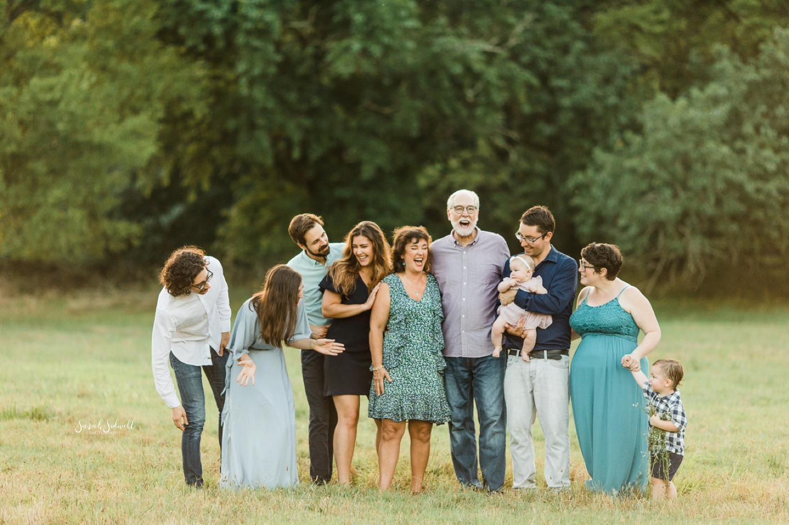

-

1992- Birth of Cream & Craft
Cream&Craft was founded as a humble family-run stall on a small street corner. Using grandmother’s original recipes and a hand-churned ice cream maker, the founders served freshly made ice cream to neighbours and passers-by, focusing on quality, warmth, and personal connection. -

1995-2000- First Growth
As word spread and loyal customers returned, Cream&Craft introduced its first set of signature flavours—Classic Vanilla, Strawberry Bliss, and Rich Chocolate. The growing popularity allowed the business to move into its first brick-and-mortar creamery, creating a cosy space where families could enjoy a scoop together. -

2008- Innovation Era
Driven by passion and creativity, Cream&Craft began experimenting with unique flavour combinations and seasonal creations. This led to the launch of limited-edition recipes such as Honey Lavender, Burnt Caramel and Matcha Almond, which quickly became fan favourites and set the brand apart. -

2012- Local Partnerships
Committed to using only the freshest ingredients, Cream&Craft established formal partnerships with local dairy farmers and fruit growers. These collaborations ensured sustainable sourcing, better product quality and stronger support for the local community. -

2017 – Expansion
With its reputation growing across the region, the brand opened multiple new stores in nearby towns. Each outlet retained the same handcrafted preparation methods and welcoming atmosphere, allowing more customers to experience Cream&Craft’s unique approach to ice cream. -

2024 – Digital Transformation
To serve a broader audience, Cream&Craft launched its own e-commerce platform and started nationwide delivery. Customers could now order their favourite flavours online and enjoy handcrafted ice cream delivered directly to their homes, while still experiencing the same artisanal quality.
About Us

Who We Are?
Cream&Craft is a family-founded ice cream brand dedicated to creating hand-crafted, high-quality ice cream made with fresh, locally sourced ingredients. Since opening our first small creamery in 1992, we've been committed to turning simple moments into delicious memories.
What began as a small family recipe has grown into a beloved local institution, but we've never lost sight of our roots. Every batch is still made with the same care and attention to detail that my grandmother poured into her original recipes.
We partner with local dairy farmers and fruit growers to ensure the freshest ingredients in every scoop. Our ice cream contains no artificial flavors or preservatives - just honest, wholesome goodness.
Why Choose Us ?
Free Delivery
On All Orders
24 Hours Returns
Money Return GuaranteeOffer & Gifts
On All Orders